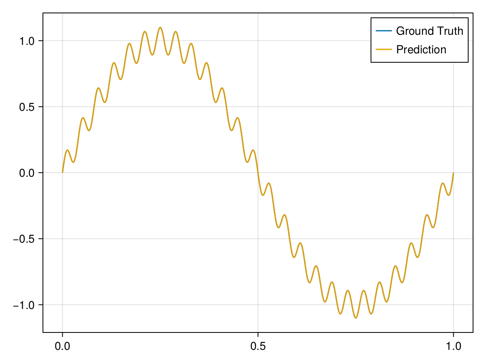

1D Poisson's Equation
This example is taken from [4]. Consider a simple 1D Poisson’s equation with Dirichlet boundary conditions. The solution is given by
\[u(x)=\sin (2 \pi x)+0.1 \sin (50 \pi x)\]
using ModelingToolkit, IntervalSets, Sophon
using Optimization, OptimizationOptimJL, Zygote
using CairoMakie
@parameters x
@variables u(..)
Dₓ² = Differential(x)^2
f(x) = -4 * π^2 * sin(2 * π * x) - 250 * π^2 * sin(50 * π * x)
eq = Dₓ²(u(x)) ~ f(x)
domain = [x ∈ 0 .. 1]
bcs = [u(0) ~ 0, u(1) ~ 0]
@named poisson = PDESystem(eq, bcs, domain, [x], [u(x)])\[ \begin{align} \frac{\mathrm{d}}{\mathrm{d}x} \frac{\mathrm{d} u\left( x \right)}{\mathrm{d}x} =& - 39.478 \sin\left( 6.2832 x \right) - 2467.4 \sin\left( 157.08 x \right) \end{align} \]
chain = Siren(1, 16, 32, 16, 1)
pinn = PINN(chain)
sampler = QuasiRandomSampler(200, 1)
strategy = NonAdaptiveTraining(1 , 50)
prob = Sophon.discretize(poisson, pinn, sampler, strategy)
@showprogress res = Optimization.solve(prob, BFGS(); maxiters=2000)
phi = pinn.phi
xs = 0:0.001:1
u_true = @. sin(2 * pi * xs) + 0.1 * sin(50 * pi * xs)
us = phi(xs', res.u)
fig = Figure()
axis = Axis(fig[1, 1])
lines!(xs, u_true; label="Ground Truth")
lines!(xs, vec(us); label="Prediction")
axislegend(axis)
fig
0.0%┣ ┫ 1/2.0k [00:20<Inf:Inf, InfGs/it]
4.087277e+06 0.1%┣ ┫ 2/2.0k [00:20<10:59:03, 20s/it]
3.347462e+06 0.1%┣ ┫ 3/2.0k [00:20<05:30:31, 10s/it]
3.028427e+06 0.2%┣ ┫ 4/2.0k [00:20<03:41:01, 7s/it]
2.387619e+06 0.2%┣ ┫ 5/2.0k [00:20<02:46:22, 5s/it]
2.085717e+06 0.3%┣ ┫ 6/2.0k [00:20<02:13:27, 4s/it]
1.848929e+06 0.3%┣ ┫ 7/2.0k [00:20<01:52:01, 3s/it]
1.538837e+06 0.4%┣▏ ┫ 8/2.0k [00:20<01:36:15, 3s/it]
1.410145e+06 0.4%┣▏ ┫ 9/2.0k [00:20<01:24:28, 3s/it]
1.202795e+06 0.5%┣▏ ┫ 10/2.0k [00:20<01:15:20, 2s/it]
1.011095e+06 0.5%┣▏ ┫ 11/2.0k [00:20<01:07:59, 2s/it]
8.347582e+05 0.6%┣▏ ┫ 12/2.0k [00:21<01:02:06, 2s/it]
7.346557e+05 0.6%┣▏ ┫ 13/2.0k [00:21<57:04, 2s/it]
6.420547e+05 0.7%┣▎ ┫ 14/2.0k [00:21<52:49, 2s/it]
5.713516e+05 0.7%┣▎ ┫ 15/2.0k [00:21<49:11, 1s/it]
5.050712e+05 0.8%┣▎ ┫ 16/2.0k [00:21<46:01, 1s/it]
4.503744e+05 0.8%┣▎ ┫ 17/2.0k [00:21<43:20, 1s/it]
3.916174e+05 0.9%┣▎ ┫ 18/2.0k [00:21<40:53, 1s/it]
3.384180e+05 0.9%┣▎ ┫ 19/2.0k [00:21<38:42, 1s/it]
3.067298e+05 1.0%┣▎ ┫ 20/2.0k [00:21<36:46, 1s/it]
2.580129e+05 1.0%┣▍ ┫ 21/2.0k [00:21<35:00, 1s/it]
2.462497e+05 1.1%┣▍ ┫ 22/2.0k [00:21<33:25, 1s/it]
1.991570e+05 1.1%┣▍ ┫ 23/2.0k [00:21<32:01, 1it/s]
1.614116e+05 1.2%┣▍ ┫ 24/2.0k [00:21<30:42, 1it/s]
1.354605e+05 1.2%┣▍ ┫ 25/2.0k [00:21<29:29, 1it/s]
1.209287e+05 1.3%┣▍ ┫ 26/2.0k [00:22<28:23, 1it/s]
1.027330e+05 1.3%┣▍ ┫ 27/2.0k [00:22<27:21, 1it/s]
9.887322e+04 1.4%┣▌ ┫ 28/2.0k [00:22<26:24, 1it/s]
8.485181e+04 1.4%┣▌ ┫ 29/2.0k [00:22<25:33, 1it/s]
7.655221e+04 1.5%┣▌ ┫ 30/2.0k [00:22<24:44, 1it/s]
6.937968e+04 1.5%┣▌ ┫ 31/2.0k [00:22<23:57, 1it/s]
6.438347e+04 1.6%┣▌ ┫ 32/2.0k [00:22<23:14, 1it/s]
5.376448e+04 1.6%┣▌ ┫ 33/2.0k [00:22<22:34, 1it/s]
5.027797e+04 1.7%┣▌ ┫ 34/2.0k [00:22<21:58, 1it/s]
4.428606e+04 1.7%┣▋ ┫ 35/2.0k [00:22<21:22, 2it/s]
3.965111e+04 1.8%┣▋ ┫ 36/2.0k [00:22<20:48, 2it/s]
3.483542e+04 1.8%┣▋ ┫ 37/2.0k [00:22<20:16, 2it/s]
3.196395e+04 1.9%┣▋ ┫ 38/2.0k [00:22<19:46, 2it/s]
2.959644e+04 1.9%┣▋ ┫ 39/2.0k [00:22<19:17, 2it/s]
2.637533e+04 2.0%┣▋ ┫ 40/2.0k [00:22<18:51, 2it/s]
2.495746e+04 2.0%┣▋ ┫ 41/2.0k [00:23<18:25, 2it/s]
2.287864e+04 2.1%┣▊ ┫ 42/2.0k [00:23<18:00, 2it/s]
2.077409e+04 2.1%┣▊ ┫ 43/2.0k [00:23<17:36, 2it/s]
1.894503e+04 2.2%┣▊ ┫ 44/2.0k [00:23<17:14, 2it/s]
1.728667e+04 2.2%┣▊ ┫ 45/2.0k [00:23<16:52, 2it/s]
1.562952e+04 2.3%┣▊ ┫ 46/2.0k [00:23<16:33, 2it/s]
1.437260e+04 2.3%┣▊ ┫ 47/2.0k [00:23<16:13, 2it/s]
1.192554e+04 2.4%┣▉ ┫ 49/2.0k [00:23<15:35, 2it/s]
1.095849e+04 2.5%┣▉ ┫ 50/2.0k [00:23<15:19, 2it/s]
9.677871e+03 2.5%┣▉ ┫ 51/2.0k [00:23<15:02, 2it/s]
8.961143e+03 2.6%┣▉ ┫ 52/2.0k [00:23<14:46, 2it/s]
8.386749e+03 2.6%┣▉ ┫ 53/2.0k [00:23<14:31, 2it/s]
7.750683e+03 2.7%┣▉ ┫ 54/2.0k [00:23<14:16, 2it/s]
6.983499e+03 2.8%┣█ ┫ 56/2.0k [00:23<13:47, 2it/s]
6.599508e+03 2.8%┣█ ┫ 57/2.0k [00:23<13:34, 2it/s]
5.902898e+03 2.9%┣█ ┫ 59/2.0k [00:24<13:08, 2it/s]
5.630848e+03 3.0%┣█ ┫ 60/2.0k [00:24<12:57, 2it/s]
5.092740e+03 3.1%┣█ ┫ 62/2.0k [00:24<12:34, 3it/s]
4.777715e+03 3.2%┣█ ┫ 64/2.0k [00:24<12:12, 3it/s]
4.602844e+03 3.2%┣█ ┫ 65/2.0k [00:24<12:02, 3it/s]
4.360329e+03 3.3%┣█ ┫ 66/2.0k [00:24<11:52, 3it/s]
4.233720e+03 3.3%┣█ ┫ 67/2.0k [00:24<11:43, 3it/s]
4.097946e+03 3.4%┣█ ┫ 68/2.0k [00:24<11:34, 3it/s]
3.754109e+03 3.5%┣█▏ ┫ 70/2.0k [00:24<11:15, 3it/s]
3.511657e+03 3.6%┣█▏ ┫ 72/2.0k [00:24<10:58, 3it/s]
3.414022e+03 3.6%┣█▏ ┫ 73/2.0k [00:24<10:51, 3it/s]
3.178104e+03 3.7%┣█▏ ┫ 75/2.0k [00:24<10:35, 3it/s]
2.927383e+03 3.8%┣█▎ ┫ 77/2.0k [00:25<10:20, 3it/s]
2.771813e+03 3.9%┣█▎ ┫ 78/2.0k [00:25<10:13, 3it/s]
2.572591e+03 4.0%┣█▎ ┫ 80/2.0k [00:25<10:00, 3it/s]
2.458325e+03 4.1%┣█▎ ┫ 82/2.0k [00:25<09:47, 3it/s]
2.363038e+03 4.1%┣█▎ ┫ 83/2.0k [00:25<09:41, 3it/s]
2.205881e+03 4.2%┣█▍ ┫ 85/2.0k [00:25<09:28, 3it/s]
2.100118e+03 4.3%┣█▍ ┫ 86/2.0k [00:25<09:23, 3it/s]
2.003633e+03 4.3%┣█▍ ┫ 87/2.0k [00:25<09:18, 3it/s]
1.879645e+03 4.4%┣█▍ ┫ 89/2.0k [00:25<09:06, 3it/s]
1.788735e+03 4.5%┣█▍ ┫ 90/2.0k [00:25<09:02, 4it/s]
1.577492e+03 4.6%┣█▌ ┫ 92/2.0k [00:25<08:51, 4it/s]
1.399147e+03 4.7%┣█▌ ┫ 94/2.0k [00:25<08:41, 4it/s]
1.328307e+03 4.7%┣█▌ ┫ 95/2.0k [00:25<08:37, 4it/s]
1.191110e+03 4.8%┣█▌ ┫ 97/2.0k [00:26<08:27, 4it/s]
1.070328e+03 4.9%┣█▋ ┫ 99/2.0k [00:26<08:18, 4it/s]
9.978827e+02 5.0%┣█▋ ┫ 101/2.0k [00:26<08:09, 4it/s]
9.465567e+02 5.1%┣█▋ ┫ 102/2.0k [00:26<08:05, 4it/s]
8.671446e+02 5.2%┣█▋ ┫ 104/2.0k [00:26<07:57, 4it/s]
8.035943e+02 5.3%┣█▋ ┫ 106/2.0k [00:26<07:49, 4it/s]
7.423853e+02 5.4%┣█▊ ┫ 108/2.0k [00:26<07:41, 4it/s]
7.021329e+02 5.4%┣█▊ ┫ 109/2.0k [00:26<07:38, 4it/s]
6.644855e+02 5.5%┣█▊ ┫ 110/2.0k [00:26<07:35, 4it/s]
6.411561e+02 5.5%┣█▊ ┫ 111/2.0k [00:26<07:32, 4it/s]
5.913746e+02 5.6%┣█▊ ┫ 113/2.0k [00:26<07:24, 4it/s]
5.422815e+02 5.7%┣█▉ ┫ 115/2.0k [00:26<07:18, 4it/s]
5.014006e+02 5.8%┣█▉ ┫ 117/2.0k [00:27<07:11, 4it/s]
4.631596e+02 5.9%┣█▉ ┫ 119/2.0k [00:27<07:05, 4it/s]
4.271247e+02 6.0%┣█▉ ┫ 121/2.0k [00:27<06:59, 4it/s]
4.020215e+02 6.1%┣██ ┫ 123/2.0k [00:27<06:52, 5it/s]
3.799905e+02 6.2%┣██ ┫ 125/2.0k [00:27<06:47, 5it/s]
3.649842e+02 6.3%┣██ ┫ 126/2.0k [00:27<06:44, 5it/s]
3.378571e+02 6.4%┣██ ┫ 128/2.0k [00:27<06:39, 5it/s]
3.182218e+02 6.5%┣██ ┫ 130/2.0k [00:27<06:33, 5it/s]
3.061341e+02 6.6%┣██ ┫ 132/2.0k [00:27<06:28, 5it/s]
2.934259e+02 6.7%┣██ ┫ 134/2.0k [00:27<06:23, 5it/s]
2.824789e+02 6.8%┣██ ┫ 136/2.0k [00:27<06:18, 5it/s]
2.734795e+02 6.9%┣██▏ ┫ 138/2.0k [00:27<06:13, 5it/s]
2.626259e+02 7.0%┣██▏ ┫ 140/2.0k [00:27<06:08, 5it/s]
2.454961e+02 7.1%┣██▏ ┫ 142/2.0k [00:28<06:04, 5it/s]
2.364959e+02 7.1%┣██▏ ┫ 143/2.0k [00:28<06:02, 5it/s]
2.219527e+02 7.2%┣██▎ ┫ 145/2.0k [00:28<05:57, 5it/s]
2.104518e+02 7.3%┣██▎ ┫ 147/2.0k [00:28<05:53, 5it/s]
2.008920e+02 7.4%┣██▎ ┫ 149/2.0k [00:28<05:49, 5it/s]
1.887348e+02 7.5%┣██▍ ┫ 151/2.0k [00:28<05:45, 5it/s]
1.812759e+02 7.6%┣██▍ ┫ 152/2.0k [00:28<05:43, 5it/s]
1.677374e+02 7.7%┣██▍ ┫ 154/2.0k [00:28<05:39, 5it/s]
1.570448e+02 7.8%┣██▍ ┫ 156/2.0k [00:28<05:35, 6it/s]
1.469588e+02 7.9%┣██▌ ┫ 158/2.0k [00:28<05:31, 6it/s]
1.375090e+02 8.0%┣██▌ ┫ 160/2.0k [00:28<05:28, 6it/s]
1.270686e+02 8.1%┣██▌ ┫ 162/2.0k [00:28<05:25, 6it/s]
1.159537e+02 8.2%┣██▌ ┫ 164/2.0k [00:29<05:21, 6it/s]
1.078588e+02 8.3%┣██▋ ┫ 166/2.0k [00:29<05:18, 6it/s]
1.010455e+02 8.4%┣██▋ ┫ 168/2.0k [00:29<05:15, 6it/s]
9.614385e+01 8.5%┣██▋ ┫ 170/2.0k [00:29<05:12, 6it/s]
9.131687e+01 8.6%┣██▋ ┫ 172/2.0k [00:29<05:08, 6it/s]
8.641868e+01 8.7%┣██▊ ┫ 174/2.0k [00:29<05:05, 6it/s]
8.292934e+01 8.8%┣██▊ ┫ 176/2.0k [00:29<05:02, 6it/s]
7.943948e+01 8.9%┣██▊ ┫ 178/2.0k [00:29<04:59, 6it/s]
7.551225e+01 9.0%┣██▉ ┫ 180/2.0k [00:29<04:56, 6it/s]
7.196034e+01 9.1%┣██▉ ┫ 182/2.0k [00:29<04:53, 6it/s]
6.824318e+01 9.2%┣██▉ ┫ 184/2.0k [00:29<04:51, 6it/s]
6.404795e+01 9.3%┣██▉ ┫ 186/2.0k [00:29<04:48, 6it/s]
6.001463e+01 9.4%┣███ ┫ 188/2.0k [00:29<04:45, 6it/s]
5.797389e+01 9.4%┣███ ┫ 189/2.0k [00:30<04:44, 6it/s]
5.421426e+01 9.5%┣███ ┫ 191/2.0k [00:30<04:42, 6it/s]
5.045038e+01 9.6%┣███ ┫ 193/2.0k [00:30<04:39, 6it/s]
4.783293e+01 9.7%┣███ ┫ 195/2.0k [00:30<04:37, 7it/s]
4.499763e+01 9.8%┣███ ┫ 197/2.0k [00:30<04:34, 7it/s]
4.208044e+01 9.9%┣███ ┫ 199/2.0k [00:30<04:32, 7it/s]
3.989494e+01 10.0%┣███ ┫ 201/2.0k [00:30<04:29, 7it/s]
3.781847e+01 10.1%┣███ ┫ 203/2.0k [00:30<04:27, 7it/s]
3.597471e+01 10.2%┣███ ┫ 205/2.0k [00:30<04:25, 7it/s]
3.382035e+01 10.3%┣███ ┫ 207/2.0k [00:30<04:22, 7it/s]
3.202422e+01 10.4%┣███▏ ┫ 209/2.0k [00:30<04:20, 7it/s]
3.121697e+01 10.5%┣███▏ ┫ 210/2.0k [00:30<04:19, 7it/s]
3.013879e+01 10.6%┣███▏ ┫ 212/2.0k [00:30<04:17, 7it/s]
2.873266e+01 10.7%┣███▏ ┫ 214/2.0k [00:30<04:15, 7it/s]
2.754737e+01 10.8%┣███▎ ┫ 216/2.0k [00:30<04:12, 7it/s]
2.663123e+01 10.9%┣███▎ ┫ 218/2.0k [00:30<04:10, 7it/s]
2.568941e+01 11.0%┣███▎ ┫ 220/2.0k [00:31<04:08, 7it/s]
2.540052e+01 11.0%┣███▎ ┫ 221/2.0k [00:31<04:08, 7it/s]
2.397346e+01 11.2%┣███▍ ┫ 224/2.0k [00:31<04:04, 7it/s]
2.324593e+01 11.3%┣███▍ ┫ 226/2.0k [00:31<04:02, 7it/s]
2.275594e+01 11.4%┣███▍ ┫ 228/2.0k [00:31<04:00, 7it/s]
2.174963e+01 11.5%┣███▌ ┫ 231/2.0k [00:31<03:57, 7it/s]
2.118718e+01 11.6%┣███▌ ┫ 233/2.0k [00:31<03:56, 8it/s]
2.016910e+01 11.8%┣███▌ ┫ 236/2.0k [00:31<03:53, 8it/s]
1.944099e+01 11.9%┣███▋ ┫ 238/2.0k [00:31<03:51, 8it/s]
1.866410e+01 12.0%┣███▋ ┫ 240/2.0k [00:31<03:49, 8it/s]
1.773096e+01 12.1%┣███▋ ┫ 242/2.0k [00:31<03:48, 8it/s]
1.666943e+01 12.2%┣███▊ ┫ 245/2.0k [00:31<03:45, 8it/s]
1.654978e+01 12.3%┣███▊ ┫ 246/2.0k [00:31<03:44, 8it/s]
1.587009e+01 12.4%┣███▊ ┫ 248/2.0k [00:31<03:43, 8it/s]
1.500954e+01 12.5%┣███▊ ┫ 250/2.0k [00:31<03:41, 8it/s]
1.422075e+01 12.6%┣███▉ ┫ 252/2.0k [00:31<03:39, 8it/s]
1.348995e+01 12.7%┣███▉ ┫ 254/2.0k [00:32<03:38, 8it/s]
1.284587e+01 12.8%┣███▉ ┫ 256/2.0k [00:32<03:36, 8it/s]
1.267906e+01 12.8%┣███▉ ┫ 257/2.0k [00:32<03:36, 8it/s]
1.215418e+01 12.9%┣███▉ ┫ 259/2.0k [00:32<03:34, 8it/s]
1.159555e+01 13.0%┣████ ┫ 261/2.0k [00:32<03:33, 8it/s]
1.098163e+01 13.2%┣████ ┫ 264/2.0k [00:32<03:30, 8it/s]
1.072231e+01 13.3%┣████ ┫ 266/2.0k [00:32<03:29, 8it/s]
1.027160e+01 13.4%┣████ ┫ 268/2.0k [00:32<03:28, 8it/s]
9.613463e+00 13.5%┣████ ┫ 270/2.0k [00:32<03:26, 8it/s]
8.972112e+00 13.6%┣████ ┫ 273/2.0k [00:32<03:24, 8it/s]
8.676488e+00 13.8%┣████▏ ┫ 276/2.0k [00:32<03:22, 9it/s]
8.428682e+00 13.9%┣████▏ ┫ 278/2.0k [00:32<03:21, 9it/s]
8.132534e+00 14.0%┣████▏ ┫ 280/2.0k [00:32<03:19, 9it/s]
8.098498e+00 14.0%┣████▏ ┫ 281/2.0k [00:32<03:19, 9it/s]
7.823033e+00 14.1%┣████▎ ┫ 283/2.0k [00:32<03:17, 9it/s]
7.590706e+00 14.2%┣████▎ ┫ 285/2.0k [00:32<03:16, 9it/s]
7.320616e+00 14.4%┣████▎ ┫ 288/2.0k [00:33<03:14, 9it/s]
7.013174e+00 14.5%┣████▍ ┫ 291/2.0k [00:33<03:12, 9it/s]
6.800239e+00 14.6%┣████▍ ┫ 293/2.0k [00:33<03:11, 9it/s]
6.687610e+00 14.7%┣████▍ ┫ 294/2.0k [00:33<03:11, 9it/s]
6.359220e+00 14.8%┣████▍ ┫ 296/2.0k [00:33<03:09, 9it/s]
6.159740e+00 14.9%┣████▌ ┫ 298/2.0k [00:33<03:08, 9it/s]
5.910991e+00 15.0%┣████▌ ┫ 301/2.0k [00:33<03:06, 9it/s]
5.653254e+00 15.2%┣████▋ ┫ 304/2.0k [00:33<03:05, 9it/s]
5.417522e+00 15.3%┣████▋ ┫ 306/2.0k [00:33<03:04, 9it/s]
5.343437e+00 15.3%┣████▋ ┫ 307/2.0k [00:33<03:03, 9it/s]
5.122860e+00 15.4%┣████▋ ┫ 309/2.0k [00:33<03:02, 9it/s]
4.967172e+00 15.5%┣████▋ ┫ 311/2.0k [00:33<03:01, 9it/s]
4.801615e+00 15.6%┣████▊ ┫ 313/2.0k [00:33<03:00, 9it/s]
4.671708e+00 15.7%┣████▊ ┫ 315/2.0k [00:33<02:59, 9it/s]
4.457848e+00 15.9%┣████▊ ┫ 318/2.0k [00:33<02:57, 9it/s]
4.392149e+00 15.9%┣████▋ ┫ 319/2.0k [00:33<02:57, 10it/s]
4.109534e+00 16.1%┣████▊ ┫ 322/2.0k [00:33<02:55, 10it/s]
3.821223e+00 16.2%┣████▊ ┫ 325/2.0k [00:34<02:54, 10it/s]
3.607872e+00 16.4%┣████▊ ┫ 328/2.0k [00:34<02:52, 10it/s]
3.392870e+00 16.5%┣████▉ ┫ 331/2.0k [00:34<02:51, 10it/s]
3.270216e+00 16.6%┣████▉ ┫ 333/2.0k [00:34<02:50, 10it/s]
3.116484e+00 16.8%┣████▉ ┫ 336/2.0k [00:34<02:48, 10it/s]
3.002262e+00 16.9%┣█████ ┫ 339/2.0k [00:34<02:47, 10it/s]
2.940142e+00 17.0%┣█████ ┫ 341/2.0k [00:34<02:46, 10it/s]
2.789874e+00 17.2%┣█████ ┫ 344/2.0k [00:34<02:45, 10it/s]
2.671175e+00 17.3%┣█████ ┫ 347/2.0k [00:34<02:43, 10it/s]
2.545123e+00 17.5%┣█████ ┫ 350/2.0k [00:34<02:42, 10it/s]
2.437123e+00 17.6%┣█████▏ ┫ 353/2.0k [00:34<02:41, 10it/s]
2.308079e+00 17.8%┣█████▏ ┫ 356/2.0k [00:34<02:39, 10it/s]
2.155856e+00 17.9%┣█████▏ ┫ 359/2.0k [00:34<02:38, 10it/s]
2.059095e+00 18.1%┣█████▎ ┫ 362/2.0k [00:35<02:37, 10it/s]
1.963678e+00 18.2%┣█████▎ ┫ 365/2.0k [00:35<02:35, 11it/s]
1.871818e+00 18.4%┣█████▍ ┫ 369/2.0k [00:35<02:34, 11it/s]
1.728166e+00 18.6%┣█████▍ ┫ 372/2.0k [00:35<02:32, 11it/s]
1.629615e+00 18.7%┣█████▍ ┫ 375/2.0k [00:35<02:31, 11it/s]
1.576329e+00 18.8%┣█████▌ ┫ 377/2.0k [00:35<02:30, 11it/s]
1.511151e+00 19.0%┣█████▌ ┫ 380/2.0k [00:35<02:29, 11it/s]
1.439977e+00 19.1%┣█████▌ ┫ 383/2.0k [00:35<02:28, 11it/s]
1.364084e+00 19.3%┣█████▋ ┫ 386/2.0k [00:35<02:27, 11it/s]
1.280792e+00 19.5%┣█████▋ ┫ 390/2.0k [00:35<02:25, 11it/s]
1.244776e+00 19.6%┣█████▊ ┫ 393/2.0k [00:35<02:24, 11it/s]
1.182736e+00 19.7%┣█████▊ ┫ 395/2.0k [00:35<02:24, 11it/s]
1.114643e+00 19.9%┣█████▊ ┫ 398/2.0k [00:35<02:22, 11it/s]
1.054398e+00 20.1%┣█████▉ ┫ 402/2.0k [00:35<02:21, 11it/s]
1.005515e+00 20.2%┣█████▉ ┫ 405/2.0k [00:35<02:20, 11it/s]
9.592468e-01 20.4%┣██████ ┫ 409/2.0k [00:35<02:18, 12it/s]
9.336555e-01 20.6%┣██████ ┫ 412/2.0k [00:36<02:17, 12it/s]
8.735638e-01 20.8%┣██████ ┫ 416/2.0k [00:36<02:16, 12it/s]
8.352474e-01 20.9%┣██████ ┫ 419/2.0k [00:36<02:15, 12it/s]
8.020824e-01 21.1%┣██████▏ ┫ 422/2.0k [00:36<02:14, 12it/s]
7.683301e-01 21.3%┣██████▏ ┫ 426/2.0k [00:36<02:13, 12it/s]
7.269094e-01 21.4%┣██████▏ ┫ 428/2.0k [00:36<02:12, 12it/s]
6.899854e-01 21.5%┣██████▎ ┫ 430/2.0k [00:36<02:11, 12it/s]
6.509364e-01 21.6%┣██████▎ ┫ 433/2.0k [00:36<02:11, 12it/s]
6.153560e-01 21.8%┣██████▎ ┫ 436/2.0k [00:36<02:10, 12it/s]
5.759486e-01 22.0%┣██████▍ ┫ 440/2.0k [00:36<02:08, 12it/s]
5.327844e-01 22.2%┣██████▍ ┫ 444/2.0k [00:36<02:07, 12it/s]
5.123402e-01 22.3%┣██████▌ ┫ 447/2.0k [00:36<02:06, 12it/s]
4.850063e-01 22.6%┣██████▌ ┫ 452/2.0k [00:36<02:05, 12it/s]
4.473780e-01 22.7%┣██████▋ ┫ 455/2.0k [00:36<02:04, 13it/s]
4.164716e-01 23.0%┣██████▊ ┫ 460/2.0k [00:36<02:02, 13it/s]
3.772348e-01 23.2%┣██████▊ ┫ 465/2.0k [00:36<02:01, 13it/s]
3.500636e-01 23.4%┣██████▉ ┫ 469/2.0k [00:36<01:59, 13it/s]
3.372263e-01 23.6%┣██████▉ ┫ 472/2.0k [00:37<01:59, 13it/s]
3.137161e-01 23.9%┣███████ ┫ 478/2.0k [00:37<01:57, 13it/s]
2.943325e-01 24.2%┣███████ ┫ 484/2.0k [00:37<01:55, 13it/s]
2.701209e-01 24.5%┣███████ ┫ 490/2.0k [00:37<01:53, 13it/s]
2.483798e-01 24.8%┣███████▏ ┫ 496/2.0k [00:37<01:52, 13it/s]
2.395001e-01 24.9%┣███████▎ ┫ 499/2.0k [00:37<01:51, 14it/s]
2.168526e-01 25.2%┣███████▎ ┫ 504/2.0k [00:37<01:50, 14it/s]
2.024735e-01 25.4%┣███████▍ ┫ 509/2.0k [00:37<01:48, 14it/s]
1.877493e-01 25.6%┣███████▍ ┫ 513/2.0k [00:37<01:47, 14it/s]
1.750898e-01 25.9%┣███████▌ ┫ 518/2.0k [00:37<01:46, 14it/s]
1.625990e-01 26.1%┣███████▋ ┫ 522/2.0k [00:37<01:45, 14it/s]
1.519651e-01 26.3%┣███████▋ ┫ 526/2.0k [00:37<01:44, 14it/s]
1.386547e-01 26.6%┣███████▊ ┫ 533/2.0k [00:37<01:43, 14it/s]
1.253194e-01 27.0%┣███████▉ ┫ 540/2.0k [00:37<01:41, 14it/s]
1.164580e-01 27.2%┣████████ ┫ 545/2.0k [00:37<01:40, 15it/s]
1.081198e-01 27.5%┣████████ ┫ 551/2.0k [00:37<01:38, 15it/s]
1.020026e-01 27.7%┣████████ ┫ 555/2.0k [00:37<01:38, 15it/s]
9.400861e-02 28.1%┣████████▏ ┫ 562/2.0k [00:37<01:36, 15it/s]
8.693158e-02 28.4%┣████████▎ ┫ 569/2.0k [00:38<01:35, 15it/s]
8.155733e-02 28.7%┣████████▍ ┫ 575/2.0k [00:38<01:33, 15it/s]
7.770389e-02 29.0%┣████████▍ ┫ 581/2.0k [00:38<01:32, 15it/s]
7.546442e-02 29.2%┣████████▌ ┫ 585/2.0k [00:38<01:31, 16it/s]
7.104665e-02 29.6%┣████████▋ ┫ 593/2.0k [00:38<01:30, 16it/s]
6.566485e-02 30.0%┣████████▊ ┫ 600/2.0k [00:38<01:28, 16it/s]
6.153452e-02 30.3%┣████████▉ ┫ 607/2.0k [00:38<01:27, 16it/s]
5.841930e-02 30.7%┣█████████ ┫ 614/2.0k [00:38<01:26, 16it/s]
5.578241e-02 31.0%┣█████████ ┫ 621/2.0k [00:38<01:24, 16it/s]
5.345263e-02 31.4%┣█████████ ┫ 628/2.0k [00:38<01:23, 16it/s]
5.092965e-02 31.7%┣█████████▏ ┫ 635/2.0k [00:38<01:22, 17it/s]
4.864731e-02 32.1%┣█████████▎ ┫ 643/2.0k [00:38<01:21, 17it/s]
4.704702e-02 32.4%┣█████████▍ ┫ 648/2.0k [00:38<01:20, 17it/s]
4.464663e-02 32.8%┣█████████▌ ┫ 656/2.0k [00:38<01:19, 17it/s]
4.231646e-02 33.1%┣█████████▋ ┫ 663/2.0k [00:38<01:17, 17it/s]
4.019796e-02 33.5%┣█████████▊ ┫ 670/2.0k [00:38<01:16, 17it/s]
3.873505e-02 33.8%┣█████████▉ ┫ 676/2.0k [00:38<01:15, 18it/s]
3.715511e-02 34.1%┣██████████ ┫ 683/2.0k [00:38<01:14, 18it/s]
3.528076e-02 34.5%┣██████████ ┫ 690/2.0k [00:39<01:13, 18it/s]
3.373426e-02 34.8%┣██████████ ┫ 697/2.0k [00:39<01:12, 18it/s]
3.181171e-02 35.2%┣██████████▏ ┫ 705/2.0k [00:39<01:11, 18it/s]
3.084699e-02 35.5%┣██████████▎ ┫ 710/2.0k [00:39<01:10, 18it/s]
2.962025e-02 35.8%┣██████████▍ ┫ 717/2.0k [00:39<01:09, 18it/s]
2.827343e-02 36.2%┣██████████▌ ┫ 724/2.0k [00:39<01:08, 19it/s]
2.697472e-02 36.5%┣██████████▋ ┫ 731/2.0k [00:39<01:08, 19it/s]
2.592207e-02 36.9%┣██████████▊ ┫ 738/2.0k [00:39<01:07, 19it/s]
2.474804e-02 37.2%┣██████████▉ ┫ 745/2.0k [00:39<01:06, 19it/s]
2.379844e-02 37.6%┣███████████ ┫ 752/2.0k [00:39<01:05, 19it/s]
2.288875e-02 37.9%┣███████████ ┫ 759/2.0k [00:39<01:04, 19it/s]
2.210735e-02 38.2%┣███████████ ┫ 765/2.0k [00:39<01:03, 20it/s]
2.156437e-02 38.5%┣███████████▏ ┫ 770/2.0k [00:39<01:03, 20it/s]
2.074159e-02 38.8%┣███████████▎ ┫ 777/2.0k [00:39<01:02, 20it/s]
2.002404e-02 39.2%┣███████████▍ ┫ 785/2.0k [00:39<01:01, 20it/s]
1.947326e-02 39.6%┣███████████▌ ┫ 792/2.0k [00:39<01:00, 20it/s]
1.889203e-02 39.9%┣███████████▋ ┫ 799/2.0k [00:39<00:59, 20it/s]
1.845242e-02 40.1%┣███████████▋ ┫ 803/2.0k [00:39<00:59, 20it/s]
1.770802e-02 40.5%┣███████████▊ ┫ 810/2.0k [00:39<00:58, 20it/s]
1.702450e-02 40.8%┣███████████▉ ┫ 817/2.0k [00:40<00:57, 21it/s]
1.626511e-02 41.2%┣████████████ ┫ 825/2.0k [00:40<00:56, 21it/s]
1.569935e-02 41.5%┣████████████ ┫ 831/2.0k [00:40<00:56, 21it/s]
1.503290e-02 41.9%┣████████████▏ ┫ 838/2.0k [00:40<00:55, 21it/s]
1.429112e-02 42.3%┣████████████▎ ┫ 846/2.0k [00:40<00:54, 21it/s]
1.377992e-02 42.6%┣████████████▍ ┫ 853/2.0k [00:40<00:54, 21it/s]
1.324720e-02 43.0%┣████████████▌ ┫ 860/2.0k [00:40<00:53, 22it/s]
1.287366e-02 43.2%┣████████████▌ ┫ 865/2.0k [00:40<00:52, 22it/s]
1.240531e-02 43.6%┣████████████▋ ┫ 872/2.0k [00:40<00:52, 22it/s]
1.180068e-02 43.9%┣████████████▊ ┫ 879/2.0k [00:40<00:51, 22it/s]
1.104097e-02 44.3%┣████████████▉ ┫ 887/2.0k [00:40<00:50, 22it/s]
1.058555e-02 44.6%┣█████████████ ┫ 892/2.0k [00:40<00:50, 22it/s]
1.023793e-02 44.8%┣█████████████ ┫ 896/2.0k [00:40<00:50, 22it/s]
9.702053e-03 45.1%┣█████████████ ┫ 903/2.0k [00:40<00:49, 22it/s]
9.184554e-03 45.5%┣█████████████▏ ┫ 910/2.0k [00:40<00:48, 23it/s]
8.559244e-03 45.8%┣█████████████▎ ┫ 917/2.0k [00:40<00:48, 23it/s]
8.115262e-03 46.2%┣█████████████▍ ┫ 924/2.0k [00:40<00:47, 23it/s]
7.676629e-03 46.5%┣█████████████▌ ┫ 931/2.0k [00:40<00:47, 23it/s]
7.323612e-03 46.9%┣█████████████▋ ┫ 939/2.0k [00:41<00:46, 23it/s]
6.972321e-03 47.3%┣█████████████▊ ┫ 947/2.0k [00:41<00:45, 23it/s]
6.678465e-03 47.7%┣█████████████▉ ┫ 955/2.0k [00:41<00:45, 23it/s]
6.521170e-03 48.0%┣██████████████ ┫ 960/2.0k [00:41<00:44, 24it/s]
6.148141e-03 48.4%┣██████████████ ┫ 968/2.0k [00:41<00:44, 24it/s]
5.821116e-03 48.8%┣██████████████▏ ┫ 976/2.0k [00:41<00:43, 24it/s]
5.501089e-03 49.2%┣██████████████▎ ┫ 985/2.0k [00:41<00:42, 24it/s]
5.320049e-03 49.5%┣██████████████▍ ┫ 991/2.0k [00:41<00:42, 24it/s]
5.011669e-03 49.9%┣██████████████▌ ┫ 998/2.0k [00:41<00:41, 24it/s]
4.632545e-03 50.3%┣██████████████ ┫ 1.0k/2.0k [00:41<00:41, 25it/s]
4.300266e-03 50.7%┣██████████████▏ ┫ 1.0k/2.0k [00:41<00:40, 25it/s]
4.032471e-03 51.2%┣██████████████▎ ┫ 1.0k/2.0k [00:41<00:39, 25it/s]
3.851462e-03 51.6%┣██████████████▍ ┫ 1.0k/2.0k [00:41<00:39, 25it/s]
3.678518e-03 52.0%┣██████████████▋ ┫ 1.0k/2.0k [00:41<00:38, 25it/s]
3.533649e-03 52.5%┣██████████████▊ ┫ 1.1k/2.0k [00:41<00:37, 25it/s]
3.437759e-03 53.0%┣██████████████▉ ┫ 1.1k/2.0k [00:41<00:37, 26it/s]
3.358482e-03 53.3%┣███████████████ ┫ 1.1k/2.0k [00:41<00:36, 26it/s]
3.239655e-03 53.8%┣███████████████ ┫ 1.1k/2.0k [00:41<00:36, 26it/s]
3.136778e-03 54.3%┣███████████████▏ ┫ 1.1k/2.0k [00:42<00:35, 26it/s]
3.030915e-03 54.7%┣███████████████▎ ┫ 1.1k/2.0k [00:42<00:34, 26it/s]
2.965696e-03 55.0%┣███████████████▍ ┫ 1.1k/2.0k [00:42<00:34, 26it/s]
2.855791e-03 55.5%┣███████████████▌ ┫ 1.1k/2.0k [00:42<00:33, 27it/s]
2.790611e-03 55.9%┣███████████████▋ ┫ 1.1k/2.0k [00:42<00:33, 27it/s]
2.755936e-03 56.2%┣███████████████▊ ┫ 1.1k/2.0k [00:42<00:33, 27it/s]
2.725397e-03 56.6%┣███████████████▉ ┫ 1.1k/2.0k [00:42<00:32, 27it/s]
2.709221e-03 56.8%┣████████████████ ┫ 1.1k/2.0k [00:42<00:32, 27it/s]
2.640505e-03 57.3%┣████████████████ ┫ 1.1k/2.0k [00:42<00:31, 27it/s]
2.573008e-03 57.8%┣████████████████▏ ┫ 1.2k/2.0k [00:42<00:31, 28it/s]
2.491465e-03 58.3%┣████████████████▎ ┫ 1.2k/2.0k [00:42<00:30, 28it/s]
2.445501e-03 58.7%┣████████████████▍ ┫ 1.2k/2.0k [00:42<00:30, 28it/s]
2.372162e-03 59.2%┣████████████████▋ ┫ 1.2k/2.0k [00:42<00:29, 28it/s]
2.308519e-03 59.6%┣████████████████▊ ┫ 1.2k/2.0k [00:42<00:29, 28it/s]
2.222169e-03 59.9%┣████████████████▊ ┫ 1.2k/2.0k [00:42<00:28, 28it/s]
2.146016e-03 60.2%┣████████████████▉ ┫ 1.2k/2.0k [00:42<00:28, 28it/s]
2.076979e-03 60.5%┣█████████████████ ┫ 1.2k/2.0k [00:42<00:28, 29it/s]
1.990925e-03 61.0%┣█████████████████ ┫ 1.2k/2.0k [00:42<00:27, 29it/s]
1.916135e-03 61.5%┣█████████████████▏ ┫ 1.2k/2.0k [00:42<00:27, 29it/s]
1.843198e-03 61.8%┣█████████████████▎ ┫ 1.2k/2.0k [00:43<00:26, 29it/s]
1.765190e-03 62.2%┣█████████████████▍ ┫ 1.2k/2.0k [00:43<00:26, 29it/s]
1.721180e-03 62.4%┣█████████████████▌ ┫ 1.2k/2.0k [00:43<00:26, 29it/s]
1.661241e-03 62.9%┣█████████████████▋ ┫ 1.3k/2.0k [00:43<00:25, 29it/s]
1.607123e-03 63.4%┣█████████████████▊ ┫ 1.3k/2.0k [00:43<00:25, 30it/s]
1.555837e-03 63.9%┣██████████████████ ┫ 1.3k/2.0k [00:43<00:24, 30it/s]
1.532770e-03 64.3%┣██████████████████ ┫ 1.3k/2.0k [00:43<00:24, 30it/s]
1.502258e-03 64.8%┣██████████████████▏ ┫ 1.3k/2.0k [00:43<00:23, 30it/s]
1.481825e-03 65.3%┣██████████████████▎ ┫ 1.3k/2.0k [00:43<00:23, 30it/s]
1.453916e-03 65.8%┣██████████████████▍ ┫ 1.3k/2.0k [00:43<00:22, 31it/s]
1.418196e-03 66.2%┣██████████████████▌ ┫ 1.3k/2.0k [00:43<00:22, 31it/s]
1.372195e-03 66.7%┣██████████████████▊ ┫ 1.3k/2.0k [00:43<00:22, 31it/s]
1.327781e-03 67.1%┣██████████████████▉ ┫ 1.3k/2.0k [00:43<00:21, 31it/s]
1.278281e-03 67.5%┣███████████████████ ┫ 1.4k/2.0k [00:43<00:21, 31it/s]
1.256500e-03 67.8%┣███████████████████ ┫ 1.4k/2.0k [00:43<00:21, 31it/s]
1.222268e-03 68.1%┣███████████████████ ┫ 1.4k/2.0k [00:43<00:20, 31it/s]
1.193732e-03 68.4%┣███████████████████▏ ┫ 1.4k/2.0k [00:43<00:20, 31it/s]
1.140697e-03 68.9%┣███████████████████▎ ┫ 1.4k/2.0k [00:43<00:20, 32it/s]
1.103479e-03 69.3%┣███████████████████▍ ┫ 1.4k/2.0k [00:44<00:19, 32it/s]
1.049013e-03 69.7%┣███████████████████▌ ┫ 1.4k/2.0k [00:44<00:19, 32it/s]
1.014762e-03 70.0%┣███████████████████▋ ┫ 1.4k/2.0k [00:44<00:19, 32it/s]
9.724251e-04 70.5%┣███████████████████▊ ┫ 1.4k/2.0k [00:44<00:18, 32it/s]
9.364434e-04 70.9%┣███████████████████▉ ┫ 1.4k/2.0k [00:44<00:18, 32it/s]
9.039934e-04 71.3%┣████████████████████ ┫ 1.4k/2.0k [00:44<00:18, 33it/s]
8.803169e-04 71.6%┣████████████████████ ┫ 1.4k/2.0k [00:44<00:17, 33it/s]
8.605541e-04 71.9%┣████████████████████▏ ┫ 1.4k/2.0k [00:44<00:17, 33it/s]
8.025756e-04 72.4%┣████████████████████▎ ┫ 1.4k/2.0k [00:44<00:17, 33it/s]
7.307667e-04 72.8%┣████████████████████▍ ┫ 1.5k/2.0k [00:44<00:16, 33it/s]
6.884888e-04 73.2%┣████████████████████▌ ┫ 1.5k/2.0k [00:44<00:16, 33it/s]
6.458114e-04 73.6%┣████████████████████▋ ┫ 1.5k/2.0k [00:44<00:16, 33it/s]
6.237751e-04 73.8%┣████████████████████▊ ┫ 1.5k/2.0k [00:44<00:16, 33it/s]
5.933920e-04 74.3%┣████████████████████▉ ┫ 1.5k/2.0k [00:44<00:15, 34it/s]
5.632609e-04 74.8%┣█████████████████████ ┫ 1.5k/2.0k [00:44<00:15, 34it/s]
5.386067e-04 75.1%┣█████████████████████ ┫ 1.5k/2.0k [00:44<00:15, 34it/s]
5.157407e-04 75.4%┣█████████████████████ ┫ 1.5k/2.0k [00:44<00:15, 34it/s]
4.946121e-04 75.7%┣█████████████████████▏ ┫ 1.5k/2.0k [00:44<00:14, 34it/s]
4.726339e-04 76.2%┣█████████████████████▎ ┫ 1.5k/2.0k [00:45<00:14, 34it/s]
4.559945e-04 76.6%┣█████████████████████▌ ┫ 1.5k/2.0k [00:45<00:14, 34it/s]
4.417970e-04 77.0%┣█████████████████████▌ ┫ 1.5k/2.0k [00:45<00:13, 34it/s]
4.330130e-04 77.3%┣█████████████████████▋ ┫ 1.5k/2.0k [00:45<00:13, 35it/s]
4.268357e-04 77.6%┣█████████████████████▊ ┫ 1.6k/2.0k [00:45<00:13, 35it/s]
4.145543e-04 78.1%┣█████████████████████▉ ┫ 1.6k/2.0k [00:45<00:13, 35it/s]
4.000425e-04 78.5%┣██████████████████████ ┫ 1.6k/2.0k [00:45<00:12, 35it/s]
3.858259e-04 78.9%┣██████████████████████ ┫ 1.6k/2.0k [00:45<00:12, 35it/s]
3.803706e-04 79.2%┣██████████████████████▏ ┫ 1.6k/2.0k [00:45<00:12, 35it/s]
3.756248e-04 79.5%┣██████████████████████▎ ┫ 1.6k/2.0k [00:45<00:12, 35it/s]
3.585451e-04 80.0%┣██████████████████████▍ ┫ 1.6k/2.0k [00:45<00:11, 35it/s]
3.512506e-04 80.4%┣██████████████████████▌ ┫ 1.6k/2.0k [00:45<00:11, 36it/s]
3.427136e-04 80.8%┣██████████████████████▋ ┫ 1.6k/2.0k [00:45<00:11, 36it/s]
3.343531e-04 81.1%┣██████████████████████▊ ┫ 1.6k/2.0k [00:45<00:11, 36it/s]
3.294961e-04 81.4%┣██████████████████████▉ ┫ 1.6k/2.0k [00:45<00:10, 36it/s]
3.225213e-04 81.9%┣███████████████████████ ┫ 1.6k/2.0k [00:45<00:10, 36it/s]
3.090864e-04 82.3%┣███████████████████████ ┫ 1.6k/2.0k [00:45<00:10, 36it/s]
3.056154e-04 82.5%┣███████████████████████ ┫ 1.6k/2.0k [00:45<00:10, 36it/s]
2.966034e-04 82.8%┣███████████████████████▏ ┫ 1.7k/2.0k [00:45<00:09, 36it/s]
2.893844e-04 83.2%┣███████████████████████▎ ┫ 1.7k/2.0k [00:46<00:09, 37it/s]
2.846482e-04 83.4%┣███████████████████████▍ ┫ 1.7k/2.0k [00:46<00:09, 37it/s]
2.720863e-04 83.9%┣███████████████████████▌ ┫ 1.7k/2.0k [00:46<00:09, 37it/s]
2.658467e-04 84.3%┣███████████████████████▋ ┫ 1.7k/2.0k [00:46<00:09, 37it/s]
2.617330e-04 84.7%┣███████████████████████▊ ┫ 1.7k/2.0k [00:46<00:08, 37it/s]
2.585201e-04 85.1%┣███████████████████████▉ ┫ 1.7k/2.0k [00:46<00:08, 37it/s]
2.550211e-04 85.3%┣███████████████████████▉ ┫ 1.7k/2.0k [00:46<00:08, 37it/s]
2.476624e-04 85.8%┣████████████████████████ ┫ 1.7k/2.0k [00:46<00:08, 37it/s]
2.421027e-04 86.3%┣████████████████████████▏ ┫ 1.7k/2.0k [00:46<00:07, 38it/s]
2.371830e-04 86.8%┣████████████████████████▎ ┫ 1.7k/2.0k [00:46<00:07, 38it/s]
2.336775e-04 87.1%┣████████████████████████▍ ┫ 1.7k/2.0k [00:46<00:07, 38it/s]
2.261816e-04 87.6%┣████████████████████████▌ ┫ 1.8k/2.0k [00:46<00:07, 38it/s]
2.190857e-04 88.1%┣████████████████████████▊ ┫ 1.8k/2.0k [00:46<00:06, 38it/s]
2.121599e-04 88.6%┣████████████████████████▉ ┫ 1.8k/2.0k [00:46<00:06, 38it/s]
2.094864e-04 89.0%┣█████████████████████████ ┫ 1.8k/2.0k [00:46<00:06, 38it/s]
2.050487e-04 89.5%┣█████████████████████████ ┫ 1.8k/2.0k [00:46<00:05, 39it/s]
2.009642e-04 89.9%┣█████████████████████████▏ ┫ 1.8k/2.0k [00:46<00:05, 39it/s]
1.982247e-04 90.2%┣█████████████████████████▎ ┫ 1.8k/2.0k [00:46<00:05, 39it/s]
1.948246e-04 90.6%┣█████████████████████████▍ ┫ 1.8k/2.0k [00:47<00:05, 39it/s]
1.910354e-04 90.9%┣█████████████████████████▍ ┫ 1.8k/2.0k [00:47<00:05, 39it/s]
1.859818e-04 91.4%┣█████████████████████████▋ ┫ 1.8k/2.0k [00:47<00:04, 39it/s]
1.759096e-04 91.9%┣█████████████████████████▊ ┫ 1.8k/2.0k [00:47<00:04, 39it/s]
1.670377e-04 92.4%┣█████████████████████████▉ ┫ 1.8k/2.0k [00:47<00:04, 40it/s]
1.600606e-04 92.8%┣██████████████████████████ ┫ 1.9k/2.0k [00:47<00:04, 40it/s]
1.519069e-04 93.3%┣██████████████████████████▏ ┫ 1.9k/2.0k [00:47<00:03, 40it/s]
1.478740e-04 93.7%┣██████████████████████████▎ ┫ 1.9k/2.0k [00:47<00:03, 40it/s]
1.456826e-04 94.1%┣██████████████████████████▍ ┫ 1.9k/2.0k [00:47<00:03, 40it/s]
1.422861e-04 94.4%┣██████████████████████████▍ ┫ 1.9k/2.0k [00:47<00:03, 40it/s]
1.397505e-04 94.7%┣██████████████████████████▌ ┫ 1.9k/2.0k [00:47<00:03, 40it/s]
1.376169e-04 95.2%┣██████████████████████████▋ ┫ 1.9k/2.0k [00:47<00:02, 40it/s]
1.346238e-04 95.7%┣██████████████████████████▉ ┫ 1.9k/2.0k [00:47<00:02, 41it/s]
1.270837e-04 96.0%┣██████████████████████████▉ ┫ 1.9k/2.0k [00:47<00:02, 41it/s]
1.242395e-04 96.4%┣███████████████████████████ ┫ 1.9k/2.0k [00:47<00:02, 41it/s]
1.199934e-04 96.6%┣███████████████████████████ ┫ 1.9k/2.0k [00:47<00:02, 41it/s]
1.152463e-04 97.1%┣███████████████████████████▏┫ 1.9k/2.0k [00:47<00:01, 41it/s]
1.106343e-04 97.6%┣███████████████████████████▎┫ 2.0k/2.0k [00:47<00:01, 41it/s]
1.090499e-04 97.8%┣███████████████████████████▍┫ 2.0k/2.0k [00:48<00:01, 41it/s]
1.064687e-04 98.1%┣███████████████████████████▌┫ 2.0k/2.0k [00:48<00:01, 41it/s]
1.054054e-04 98.4%┣███████████████████████████▌┫ 2.0k/2.0k [00:48<00:01, 41it/s]
1.048358e-04 98.7%┣███████████████████████████▋┫ 2.0k/2.0k [00:48<00:01, 41it/s]
1.034237e-04 99.2%┣███████████████████████████▊┫ 2.0k/2.0k [00:48<00:00, 42it/s]
1.020399e-04 99.6%┣███████████████████████████▉┫ 2.0k/2.0k [00:48<00:00, 42it/s]
1.009275e-04 100.0%┣███████████████████████████┫ 2.0k/2.0k [00:48<00:00, 42it/s]
1.007101e-04 100.0%┣███████████████████████████┫ 2.0k/2.0k [00:48<00:00, 42it/s]
Compute the relative L2 error
using Integrals
u_analytical(x,p) = sin.(2 * pi .* x) + 0.1 * sin.(50 * pi .* x)
error(x,p) = abs2.(vec(phi([x;;],res.u)) .- u_analytical(x,p))
relative_L2_error = solve(IntegralProblem(error,0,1),HCubatureJL(),reltol=1e-3,abstol=1e-3) ./ solve(IntegralProblem((x,p) -> abs2.(u_analytical(x,p)),0, 1),HCubatureJL(),reltol=1e-3,abstol=1e-3)1-element Vector{Float64}:
5.5701906309473024e-9